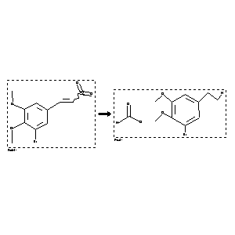

 |
| FA | RX(1); FLST(1); RX(1) |
Reaction (1 of 1)
| Reaction ID | 297529 |
| Reactant BRN | 1986470 |
| Reactant | 3,4-Dimethoxy-5-bromo-w-nitrostyrol |
| Product BRN | 3767769 |
| Product | 3-bromo-4,5-dimethoxy-phenethylamine; formate |
| No. of Reaction Details | 1 |
Reaction Details (1 of 1)
| Reaction Classification | Preparation |
| Reagent | ethanol; aqueous hydrochloric acid; acetic acid |
| Other Conditions | bei der Reduktion an Blei-Elektroden |
| Comment | Handbook |
| Citation Pointer | 2252535; Journal; Tomita; Watanabe; YKKZAJ; Yakugaku Zasshi; 58; 1938; 783,786;dtsch.Ref.S.223,226; CHZEA6; Chem.Zentralbl.; GE; 110; I; 1939; 1978; |
Reference (1 of 1)
| Citation Number | 2252535 |
| Document Type | Journal |
| Authors | Tomita; Watanabe |
| CODEN | YKKZAJ; CHZEA6 |
| Journal Title | Yakugaku Zasshi; Chem.Zentralbl. |
| Language Code | GE |
| (Series) Volume | 58; 110 |
| Number | I |
| Publication Year | 1938; 1939 |
| Page | 783,786;dtsch.Ref.S.223,226; 1978 |